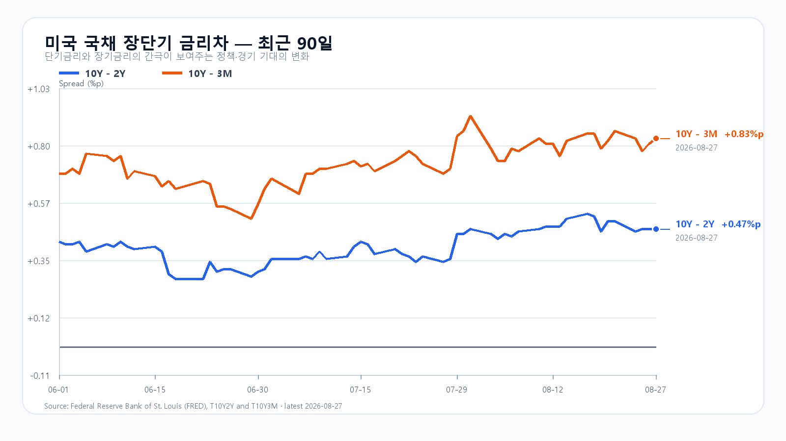

오늘의 한 문장
AI 수요는 강하지만 메모리주의 가격 반응은 약합니다. KOSPI 7,050은 외국인과 비차익 프로그램이 장전 낙폭을 되돌리는 두 메모리 대형주를 함께 살 때 열립니다.
전날 지수는 올랐지만 종목의 폭은 좁았다
KOSPI는 8월 27일 6,996.12로 출발한 뒤 6,841.88까지 밀렸고 6,912.37로 마감했습니다. KODEX 레버리지는 2.69% 오른 110,390원이었습니다. 외국인 현물 +895억원, 비차익 프로그램 +902억원으로 수급은 순매수였지만 하락 종목 539개가 상승 종목 317개보다 많았습니다.
EWY +1.65%와 SK하이닉스 ADR +2.27%에는 이미 끝난 한국장 상승이 섞여 있습니다. 오늘 새로 반영할 부분은 미국 정규장의 엔비디아 재평가와 그 뒤에 나타난 메모리주·NXT의 분화입니다.
| 항목 | 확정값 | 오늘 기준 |
|---|---|---|
| KOSPI | 6,912.37(+1.53%) | 6,800 방어 · 7,050 안착 |
| KODEX 레버리지 | 110,390원(+2.69%) | 107,500원 방어 · 111,000원 반등 |
| 외국인·비차익 | +895억 · +902억원 | 동반 순매수 유지 여부 |
| 삼성전자·SK하이닉스 NXT | 263,500원(-0.94%) · 1,705,000원(-1.45%) | 장전 낙폭 회복 여부 |
엔비디아의 강세가 메모리주까지 번지지는 않았다
미국 정규장에서 QQQ는 1.37%, TQQQ는 4.02%, SOXX는 1.95%, SMH는 3.10% 올랐습니다. 엔비디아가 8.74%, Broadcom이 4.49% 상승한 반면 AMD는 0.89%, Micron은 0.32% 내렸습니다. AI 가속기와 네트워크가 지수를 끌었고 메모리주는 뒤처졌습니다.
Marvell의 2분기 매출은 27억3,900만달러로 37% 늘었고 데이터센터 매출은 46% 증가했습니다. 3분기 매출 가이던스 31억5,000만달러±5%와 상향된 장기 전망을 내놨지만 시간외 주가는 약 7% 하락했습니다. 강한 실적을 소화하는 시장의 눈높이도 그만큼 높아졌습니다.
시간외에서 엔비디아와 두 반도체 ETF는 약 0.7%씩 되돌렸고 Micron은 약 1.4% 더 내렸습니다. 오늘 국내 메모리주는 미국 지수의 방향보다 NXT 낙폭을 정규장에서 얼마나 빨리 줄이는지가 더 직접적인 신호입니다.
DDR5는 약보합, 장기금리는 4.67%다
TrendForce의 8월 27일 공개치에서 DDR5 16Gb 현물 평균은 53.933달러로 0.12% 내렸습니다. DDR4 16Gb는 91.049달러로 보합, DDR4 8Gb는 44.011달러로 0.86% 올랐습니다. AI 메모리 수요가 강한 것과 범용 메모리 가격이 같은 방향으로 움직이는 것은 별개의 신호입니다.
미국 국채는 3개월물 3.84%, 2년물 4.20%, 10년물 4.67%, 30년물 5.19%였습니다. 10Y-2Y는 +0.47%p, 10Y-3M은 +0.83%p입니다. 신규 실업수당 청구가 20만3,000건으로 예상보다 적었던 만큼 잭슨홀 연설을 앞둔 장기금리 부담은 남아 있습니다.

오늘의 시나리오
KOSPI 6,800~7,050
미국 AI 강세가 하단을 받치지만 국내 NXT와 Micron의 약세, 잭슨홀 대기가 7,000 위 추격을 늦춥니다. 6,800을 지키면 전날 고점 6,996과 7,050을 시험합니다.
KOSPI 7,050~7,250
두 메모리 대형주가 장전 낙폭을 되돌리고 외국인 현물과 비차익 프로그램이 함께 순매수를 이어 갑니다. 7,050 위에 안착해야 7,150과 7,250을 열 수 있습니다.
KOSPI 6,550~6,800
NXT 약세가 정규장에서 확대되고 외국인·프로그램 매도가 겹칩니다. 6,800을 회복하지 못하면 전날 저점 6,841.88 아래에서 6,700과 6,550을 차례로 봅니다.
2차 지지 105,000원 · 1차 지지 107,500원 · 반등 기준 111,000원 · 저항 114,000원.
전체 장중 경로는 KOSPI 6,500~7,300으로 봅니다. 오늘 대응 점수는 공격 20 · 관망 50 · 방어 30입니다.
잭슨홀 연설은 한국장 마감 뒤 나온다
Kevin Warsh 연준 의장은 오늘 오후 11시, 미국 동부시간 오전 10시에 잭슨홀에서 기조연설을 합니다. 발언은 한국 정규장 마감 뒤 나오지만 장중 포지션을 가볍게 만드는 이유가 될 수 있습니다.
장중에는 KOSPI 6,800선, KODEX 레버리지 111,000원, 외국인 현물과 비차익 프로그램의 동반 순매수, 삼성전자·SK하이닉스의 장전 낙폭 회복이 더 직접적인 확인값입니다. 다음 미국 일정은 9월 1일 ISM 제조업지수와 9월 4일 고용보고서입니다.